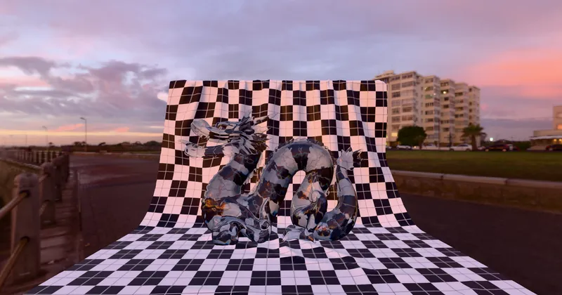

GLTF > GLTF Extensions > KHR_materials_dispersion
Dragon Dispersion - RedGPU WebGPU Example
Shows gem-like dispersion effects applied to a Dragon model.
용 모델에 적용된 보석 같은 분산 효과를 보여줍니다.

GLTF > GLTF Extensions > KHR_materials_dispersion
Shows gem-like dispersion effects applied to a Dragon model.
용 모델에 적용된 보석 같은 분산 효과를 보여줍니다.
